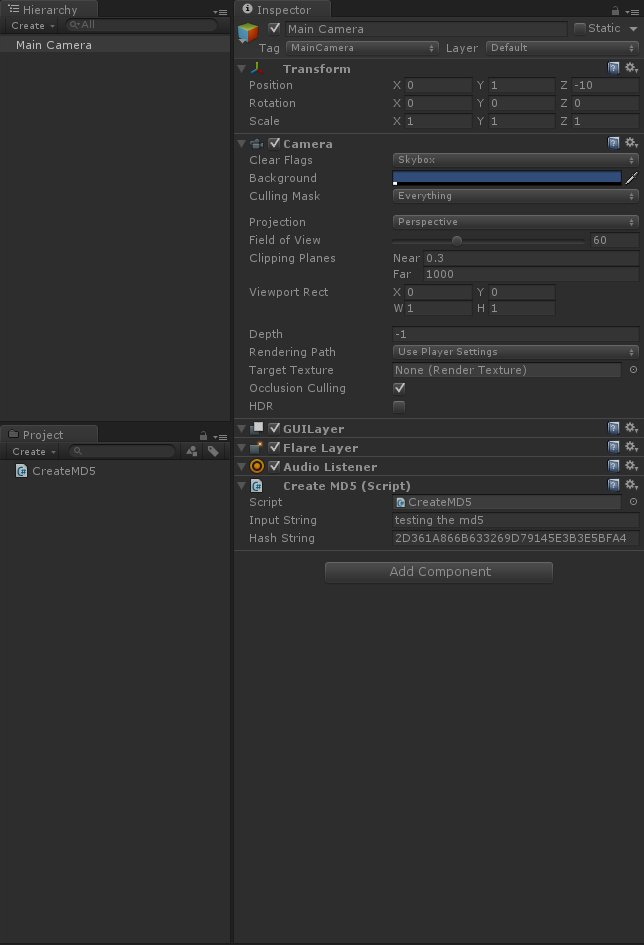

在實際專案中
如果需要用到資料傳遞
可以利用 MD5 來為資料進行加密
實際利用如下
先建立 CreateMD5.cs 腳本
using UnityEngine;
using System;
using System.Collections;
using System.Security.Cryptography;
using System.Text;
public class CreateMD5 : MonoBehaviour
{
public string inputString;
public string hashString;
void Awake()
{
MD5 md5Hash = MD5.Create();
hashString = GetMD5Hash(md5Hash, inputString);
hashString = hashString.ToUpper();
}
private string GetMD5Hash(MD5 md5Hash, string input)
{
//Convert the input string to a byte array and compute the hash.
byte[] data = md5Hash.ComputeHash(Encoding.UTF8.GetBytes(input));
//Create a new StringBuilder to collect the bytes and create a string.
StringBuilder builder = new StringBuilder();
//Loop through each byte of the hashed data and format each one as a hexadecimal strings.
for(int cnt = 0; cnt < data.Length; cnt++)
{
builder.Append(data[cnt].ToString("x2"));
}
//Return the hexadecimal string
return builder.ToString();
}
private bool VerifyMD5Hash(MD5 md5Hash, string input, string hash)
{
//Hash the input
string hashOfInput = GetMD5Hash(md5Hash, input);
//Create a StringComparer to compare the hashes.
StringComparer comparer = StringComparer.OrdinalIgnoreCase;
return 0 == comparer.Compare(hashOfInput, hash);
}
}接著將腳本賦予場上物件並隨意輸入字串
開始遊戲後即可獲得由輸入字串所產生的加密字串

若需要對加密字串進行驗證
只需要呼叫 VerifyMd5Hash 方法即可以對字串驗證